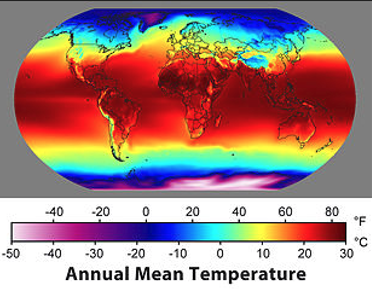
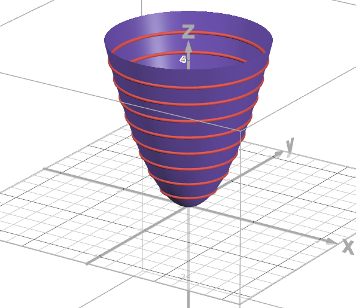
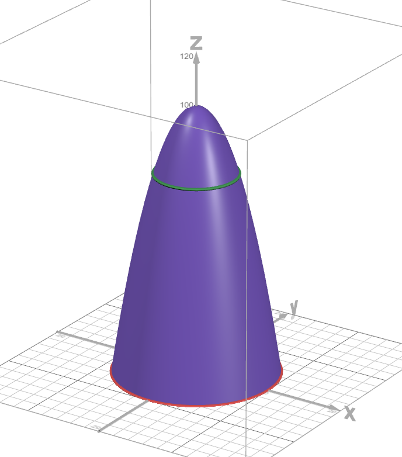
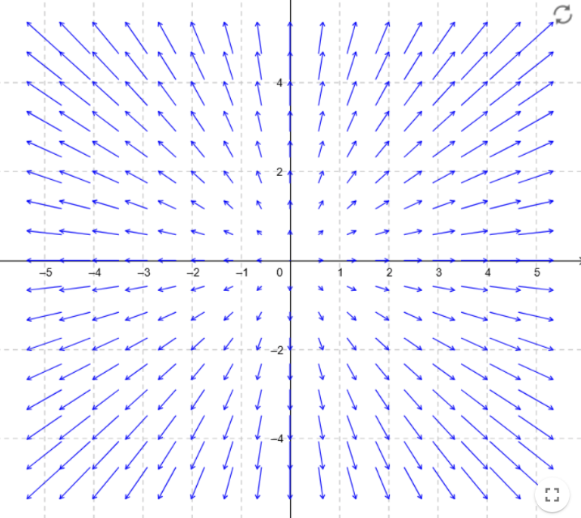

Jonathan Crofts
Nottingham Trent University
A scalar field is a function associating a single number to each point in a region of space
For example, the function
\[ d(\mathbf{r}) = d(x,y,x) = \sqrt{x^2+y^2+z^2} \]i.e. the distance of each point in space from the origin
Other examples include the temperature $T(x,y,z)$ acoss the Earth's surface, the height $H(x,y)$ above sea-level etc.
A vector field is a function associating a vector to each point in a region of space
Examples of vector fields include
Sketch the planar vector fields:
\[ \begin{align*} (i)~ \mathbf{v}(x,y) &=x^2\mathbf{i}+y^2\mathbf{j}\\ &\\ (ii)~ \mathbf{v}(x,y) &=\frac{-y\mathbf{i}+x\mathbf{j}}{x^2+y^2} \end{align*} \]Let $\phi$ be a scalar function of position (i.e. a scalar field),
\[ \phi(\mathbf{r}) = \phi(x,y,z),\qquad (x,y,z)\in S\subset\mathbf{R}^3 \]The gradient of the scalar field $\phi$, denoted $\nabla\phi$, is the vector function composed of the partial derivatives of $\phi$, i.e.
\[ \begin{align*} \nabla\phi &= \begin{pmatrix}\phi_x&\phi_y&\phi_z\end{pmatrix}\\ &= \frac{\partial\phi}{\partial x}\mathbf{i} +\frac{\partial\phi}{\partial y}\mathbf{j} +\frac{\partial\phi}{\partial z}\mathbf{k} \end{align*} \]An alternative notation is $\mathrm{grad}(\phi)$
Importantly, the gradient can be used to determine the tangent plane of a surface
It can be shown that a function $f$ increases/decreases most rapidly in the direction of the gradient, $\pm\nabla\phi$
Find the directions in which $f(x,y)=(x^2/2)+(y^2/2)$ (a) increases most rapidly and (b) decreases most rapidly at the point $(1,1)$
(a) The function increases most rapidly in the direction of $\nabla f$:
\[ \nabla f = \begin{pmatrix}x\mathbf{i}+y\mathbf{j}\end{pmatrix}_{(1,1)} = \begin{pmatrix}1&1\end{pmatrix} \](b) The function decreases most rapidly in the direction of $-\nabla f$:
\[ -\nabla f_{(1,1)} = \begin{pmatrix}-1&-1\end{pmatrix} \]We can use the gradient to find the tangent to a level curve
The set of points in the plane where a function $f(x,y)$ has a constant value
\[ f(x,y) = c \]is called a level curve of $f$
The set of all points $(x, y, f(x,y))$ in space, for the domain $(x, y)$ of $f$, is called the graph of $f$, and is also the surface $z = f(x,y)$
The above idea can be extended to obtain level surfaces (i.e. $f(x,y,z)=c$)
Importantly, it can be shown that $\left(\nabla f\right)\left.\right|_{(x,y)}$ is normal to the level curve at the point $(x,y)$
The figure shows the graph of the surface $z = x^2+y^2$ along with level curves for $z=0, 0.5, 1, \ldots, 4$
Graph $f(x,y)=100-x^2-y^2$ and plot the level curves $f(x,y)=0$ and $f(x,y)=75$
The domain of $f$ is the entire $xy$-plane and the range is the set of real numbers less than or equal to 100
A portion of the paraboloid is shown in the figure
The level curve $f(x,y)=0$:
\[ f(x,y) = 100-x^2-y^2 = 0 \implies x^2 + y^2 = 100 \]which is the circle of radius 10 centred at the origin.
Similarly, the level curve $f(x,y)=75$ is a circle of radius 5 with centre (0,0)
Find the tangent plane and normal line of the surface at $P_0(1,2,4)$
\[ f(x,y,z) = x^2+y^2+z-9=0 \]The tangent plane through $P_0$ is perpindicular to the gradient of $f$ at $P_0$
\[ \nabla f\left|_{P_0}\right. = \left(2x\mathbf{i}+2y\mathbf{j}+\mathbf{k}\right)_{(1,2,4)} = (2, 4, 1) \]The plane is therefore
\[ 2(x-1) + 4(y-2) + (z-4) = 0\qquad \text{or} \qquad 2x+4y+z = 14 \]The line normal to the surface at $P_0$ is
\[ \color{red}{\boxed{\color{white}{ \mathbf{r}(t) = \begin{pmatrix}1\\2\\4\end{pmatrix} + t\begin{pmatrix}2\\4\\1\end{pmatrix} }}} \]The divergence or flux density of a vector field $\mathbf{F} = M(x,y)\mathbf{i}+N(x,y)\mathbf{j}$ at the point $(x,y)$ is
\[ \nabla\cdot\mathbf{F} = \frac{\partial M}{\partial x} + \frac{\partial N}{\partial y} \]An alternative notation is $\mathrm{div}(\mathbf{F})$
The extension to 3 dimensions is just $\displaystyle \nabla\cdot\mathbf{F} = M_x+N_y+Q_z$ for a field $\displaystyle \mathbf{F} = (M(x,y,z), N(x,y,z), Q(x,y,z))$
Intuitively, suppose the vector field describes a fluid flow, water say. Then the divergence evaluated at $(x,y)$ tells us if the fluid is expanding ($\nabla\cdot\mathbf{F}>0$) or contracting ($\nabla\cdot\mathbf{F}<0$) at that point.
The curl or circulation density of a vector field $\mathbf{F}=M(x,y)\mathbf{i}+N(x,y)\mathbf{j}$ as the point $(x, y)$ is
\[ \nabla\times\mathbf{F} = \frac{\partial N}{\partial x} - \frac{\partial M}{\partial y} \]An alternative notation is $\mathrm{curl}(\mathbf{F})$
Intuitively, Curl measures the tendency of a vector field to induce rotation (like a whirlpool or spinning motion).
The curl is a vector quantity in 3D that points in the direction of the axis of rotation, with magnitude corresponding to the strength of rotation.
The curl of a 3d vector field $\mathbf{F}=M(x,y,z)\mathbf{i}+N(x,y,z)\mathbf{j} + P(x,y,z)\mathbf{k}$ at the point $(x, y, z)$ is
\[ \nabla\times\mathbf{F} = \begin{pmatrix}\partial P/\partial y - \partial N/\partial z & \partial M/\partial z - \partial P/\partial x & \partial N/\partial x - \partial M/\partial y \end{pmatrix} \]For remembering the curl we use the device
\[ \nabla\times\mathbf{F} = \begin{vmatrix}\mathbf{i}&\mathbf{j}&\mathbf{k}\\ \partial/\partial x&\partial/\partial y&\partial/\partial z\\ M&N&P\end{vmatrix} \]Consider the following fields
\[ \phi(x,y,z) = x^2+y^2+z^2\quad\text{and} \quad\mathbf{F} = (x, y, z) \]Show that
\[ (i) \nabla\phi = 2\mathbf{r}, (ii) \quad \nabla^2\phi = 6, \quad (iii) \nabla\cdot\mathbf{F}=3, \quad (iv) \nabla\times\mathbf{F}=0 \]$\displaystyle (i) \quad\nabla\phi = (2x, 2y, 2z) = 2\mathbf{r}$
$(ii)$ \[ \begin{align*} \nabla^2\phi &= \nabla\cdot\nabla\phi\\ &=\nabla\cdot\left(2\mathbf{r}\right)\\ &=\frac{\partial}{\partial x}\left(2x\right) + \frac{\partial}{\partial z}\left(2y\right) + \frac{\partial}{\partial x}\left(2z\right) =6\\ &\\ \end{align*} \]$(iii)\quad \nabla\cdot\mathbf{F} = \frac{\partial}{\partial x}\left(x\right) + \frac{\partial}{\partial y}\left(y\right)+\frac{\partial}{\partial z}\left(z\right) = 3 $
To see why this makes sense consider the following picture
This is the 2d vector field given by $(x,y)$
Clearly there is no rotation
Let
\[ \phi(\mathbf{r}) = g(||\mathbf{r}||), \quad g:\mathbb{R}\to\mathbb{R} \]Show that
\[ \nabla g = \frac{g'(||\mathbf{r}||)}{||\mathbf{r}||}\mathbf{r} \]Let $\displaystyle r = ||\mathbf{r}|| = \sqrt{x^2+y^2+z^2}$, then
\[ \begin{align*} \frac{\partial r}{\partial x} &= \frac{\mathrm{d}g}{\mathrm{d}r}\frac{\partial r}{\partial x} = g'(r)\cdot\frac{1}{2}\left(x^2+y^2+z^2\right)^{-1/2}2x\\ &= \frac{g'(r)}{r}x \end{align*} \]Also $\displaystyle \frac{\partial g}{\partial y} =\frac{g'(r)}{r}y~$ and $~\displaystyle \frac{\partial g}{\partial z} =\frac{g'(r)}{r}z\implies \color{red}{\boxed{\color{white}{\nabla g = \frac{g'(r)}{r}(x, y, z)}}}$